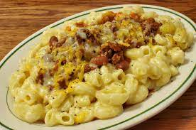

description
easy as fuck, tasty as fuck. classic mac n cheese with the extra good good.
- make it like normal from the box or from noodles
- add some jalapenos to the boil (or sautee with mushrooms +other veg)
- strain and add in tons of cheese and seasoning and a little bit of olive oil instead of butter